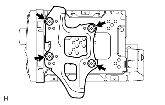

ラジオレシーバASSY 取り付け |
| 1. ラジオ ブラケット NO.2取り付け |
|
ボルト４本でラジオブラケットNo.2を取り付ける。
| 2. ラジオ ブラケット NO.1取り付け |
|  |
ボルト４本でラジオブラケットNo.21を取り付ける。
| 3. ラジオレシーバASSY W/ブラケット取り付け |
各コネクターを接続する。
スクリュー4本でラジオレシーバASSY W/ブラケットを取り付ける。
| 4. インストルメントクラスタフィニッシュ パネルSUB-ASSY CTR取り付け |
 |
ツメ12箇所のかん合を合わせ、インストルメントクラスタフイニツシユパネル CTRを取り付ける。